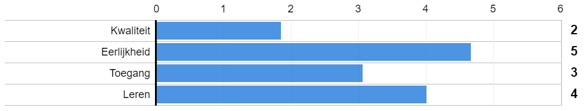

Er zijn vier verschillende uitgangspunten om aan de slag te gaan met culturele diversiteit in jouw werkomgeving.
Jouw profiel:
Scoor je hoog op Kwaliteit?
Dan sta je open voor culturele diversiteit, maar vind je het vooral belangrijk dat de organisatie streeft naar kwaliteit. Iedereen is welkom in de organisatie, als ze maar de juiste capaciteiten meebrengen. Kwaliteit staat voorop. Daarnaast is het mooi meegenomen dat iedereen in de organisatie gelijk behandeld wordt en dat mensen niet in hokjes geplaatst worden op basis van hun culturele achtergrond.
Wat is het effect van dit vertrekpunt? Vaak zie je bij een focus op kwaliteit dat er op de werkvloer uiteindelijk weinig van culturele diversiteit terecht komt.
Een voorbeeld is de huidige samenstelling van ons kabinet. Mark Rutte is iemand met het kwaliteitsperspectief. Zijn reactie op het geringe aantal vrouwen in het kabinet:
Ik had graag meer willen hebben, maar uiteindelijk geldt: we gaan voor de beste mensen. Het is wat het is.
Ben jij ook van mening dat een gebrek aan culturele diversiteit wordt veroorzaakt doordat er niet voldoende gekwalificeerde kandidaten met een migratieachtergrond zijn? Het SCP stelt dat dit niet helemaal juist is. Onder culturele minderheden is er sprake van een stijgend opleidingsniveau, verbeterde onderwijsprestaties en een betere beheersing van de Nederlandse taal. Dit wordt echter niet vertaalt naar hun positie op de arbeidsmarkt. Wat is hier de reden voor?
Wat zijn de uitdagingen van een focus op Kwaliteit?
1: Het kwaliteitsperspectief legt een sterke nadruk op objectieve selectie- en beoordelingscriteria. Echter, door er naar te streven iedereen op dezelfde manier te beoordelen, is er weinig ruimte voor de inbreng van unieke eigenschappen van medewerkers. Door een focus op kwaliteit zet je impliciet in op overeenkomsten tussen medewerkers in je team. Deze nadruk op homogeniteit kan ervoor zorgen dat culturele minderheden de druk voelen om zich aan te passen aan de dominante normen en waarden in jouw werkomgeving.
2: Uit onderzoek blijkt dat het ‘geen onderscheid maken’ ongelijkheid in een organisatie juist kan vergroten. Door geen aandacht te schenken aan het bestaan van culturele verschillen, worden vooroordelen vaak juist versterkt in plaats van weggenomen.
Wat is de oplossing? Juist door onderscheid te maken en verschillen te (h)erkennen, waarderen en benutten, kan de kwaliteit van de organisatie worden verhoogd en kunnen vooroordelen worden tegengegaan. Meer lezen hierover? Lees hier over de andere perspectieven: Rechtvaardigheid, Toegang, Leren.